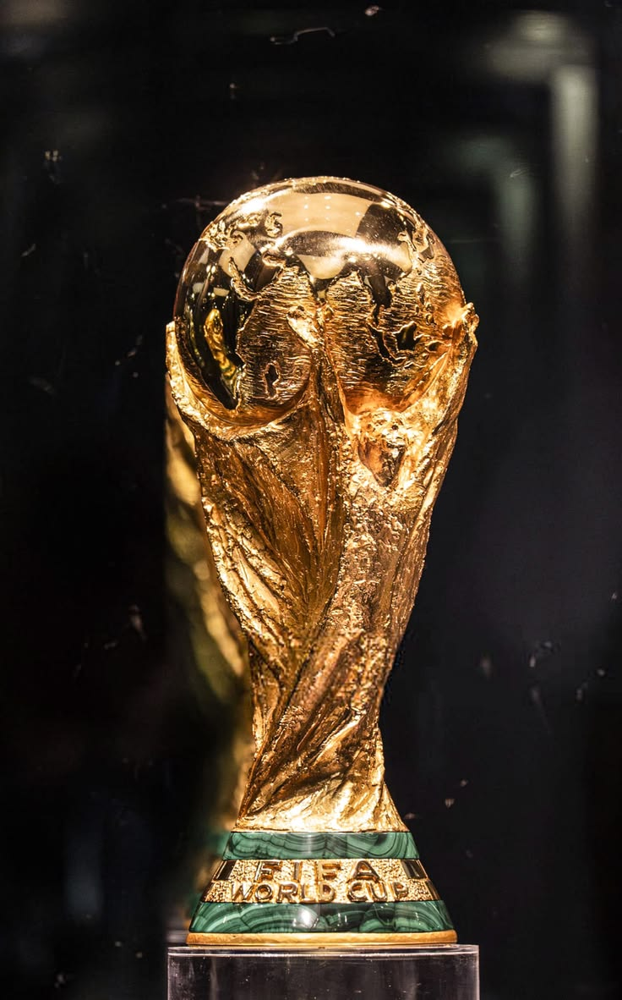
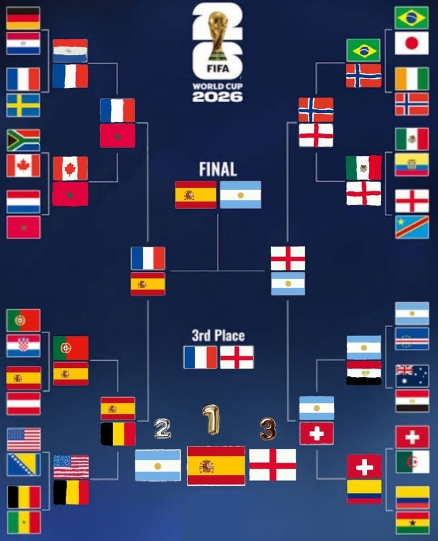
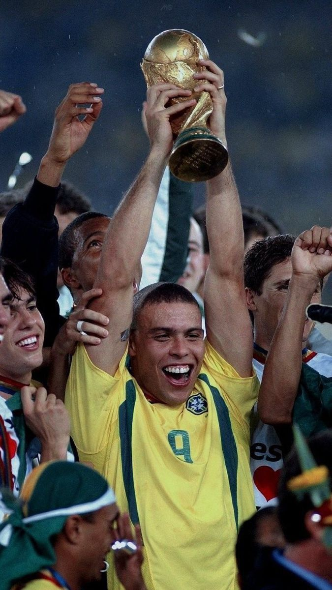
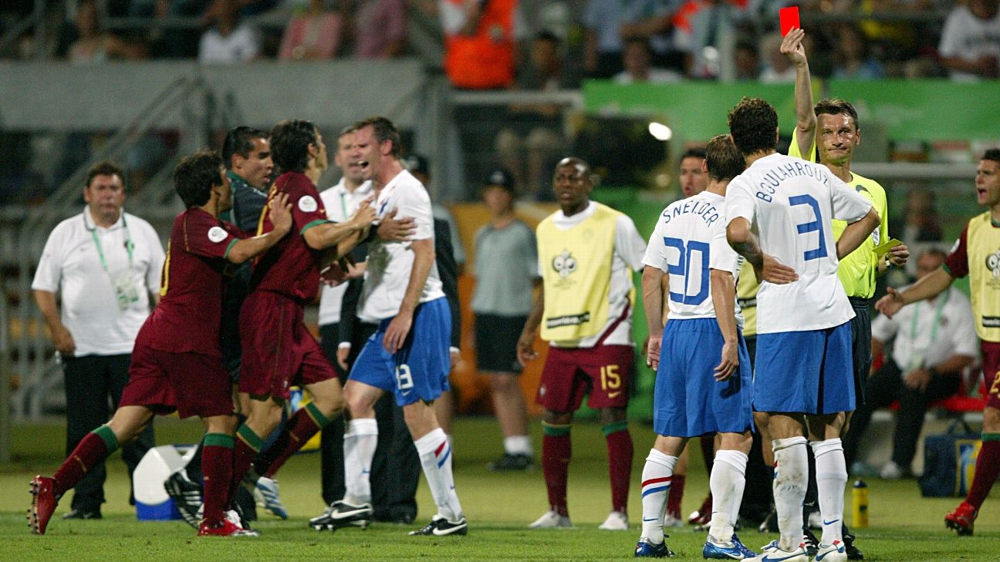

Historia y Gran Escalada del Torneo
La Copa Mundial de la FIFA es el torneo internacional de futbol masculino mas prestigioso del planeta. Organizado cada cuatro anos desde 1930, reune a las mejores selecciones nacionales clasificadas.
A lo largo de sus ediciones, el Mundial ha sido el escenario de legendarios momentos deportivos, consagrando a selecciones iconicas y a las mas grandes figuras en la historia del deporte.

Formatos y Reglas Principales del Torneo
Para competir en la fase final de la Copa Mundial, las selecciones deben superar un proceso de clasificacion previo que dura casi tres anos en sus respectivas confederaciones continentales.
- Fase de Grupos: Las selecciones participantes se dividen en grupos de 4 equipos jugando todos contra todos.
- Fase de Eliminacion Directa: Los mejores clasificados avanzan a octavos, cuartos, semifinales y la gran final.
- Periodicidad: Se lleva a cabo cada cuatro anos para mantener la expectativa y permitir las eliminatorias.
- Clasificacion Automatica: El pais o los paises anfitriones obtienen su cupo directo al torneo sin jugar eliminatorias.

Todas las Selecciones Campeonas del Mundo
| Campeones del Mundo | |||
|---|---|---|---|
| Seleccion | Anos Campeon | Sedes donde se corono | Wikipedia |
| Brasil | 1958, 1962, 1970, 1994, 2002 | Suecia, Chile, Mexico, Estados Unidos, Corea del Sur / Japon | Ver Brasil |
| Alemania | 1954, 1974, 1990, 2014 | Suiza, Alemania Occidental, Italia, Brasil | Ver Alemania |
| Italia | 1934, 1938, 1982, 2006 | Italia, Francia, Espana, Alemania | Ver Italia |
| Argentina | 1978, 1986, 2022 | Argentina, Mexico, Catar | Ver Argentina |
| Francia | 1998, 2018 | Francia, Rusia | Ver Francia |
| Uruguay | 1930, 1950 | Uruguay, Brasil | Ver Uruguay |
| Inglaterra | 1966 | Inglaterra | Ver Inglaterra |
| Espana | 2010 | Sudafrica | Ver Espana |

Tabla de Maximos Goleadores de la Historia de los Mundiales
| Lideres de Goleo en las Copas del Mundo | |||
|---|---|---|---|
| Nombre | Seleccion | Cant de Goles | Wikipedia |
| Kylian Mbappe | Francia | 22 | Ver Kylian Mbappe |
| Lionel Messi | Argentina | 21 | Ver Lionel Messi |
| Miroslav Klose | Alemania | 16 | Ver Miroslav Klose |
| Ronaldo Nazario | Brasil | 15 | Ver Ronaldo |
| Harry Kane | Inglaterra | 14 | Ver Harry Kane |
| Gerd Muller | Alemania | 14 | Ver Gerd Muller |
| Just Fontaine | Francia | 13 | Ver Just Fontaine |
| Pele | Brasil | 12 | Ver Pele |
| Cristiano Ronaldo | Portugal | 11 | Ver Cristiano Ronaldo |
| Sandor Kocsis | Hungria | 11 | Ver Sandor Kocsis |

Datos Curiosos de los Mundiales
- El trofeo robado por un perro: En 1966, el trofeo original Jules Rimet fue robado en Londres y dias despues fue encontrado por un perro llamado Pickles en un jardin.
- El partido con mas tarjetas: En Alemania 2006 (Portugal vs. Holanda), el arbitro mostro 16 tarjetas amarillas y 4 rojas.
- El gol mas rapido: Hakan Sukur de Turquia anoto a los 11 segundos contra Corea del Sur en 2002.
- El goleador mas veterano: Roger Milla de Camerun anoto en EE. UU. 1994 a la edad de 42 anos y 39 dias.
- El unico gol olimpico: Lo anoto el colombiano Marcos Coll en Chile 1962 contra la URSS.
- La mayor goleada: Ocurrio en Espana 1982 cuando Hungria derroto 10-1 a El Salvador.
- El rey de las Copas: Pele es el unico jugador en la historia que ha ganado 3 Mundiales (1958, 1962 y 1970).
